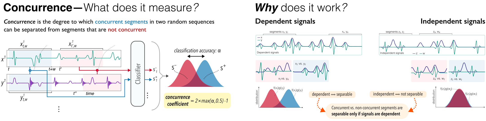

Concurrence is a new alternative to correlation for time series. It unvovers if two (sets of) time series are statistically dependent, and quantifies the degree of dependence. It is the most generally applicable metric to our knowledge.

@inproceedings{todo2025neurips,
title={TODO: Paper Title},
author={A. Author and B. Author and others},
booktitle={NeurIPS},
year={2025}
}